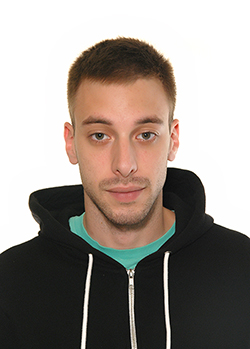

|  |
Алекса ТврдишићМастер менаџер безбедностиКонтакт |
| Датум | Посао |
|---|---|
| 2015-2018 | Играоница “ DOXA” – 3 године |
| 2020 | Кладионица “ MaxBet”, оператер, шанкер, конобар – 4 месеца |
| 2020 | Процена ризика од катастрофа у ванредним ситуацијама на Институту за интегрисану безбедност „Заштита превентива“ – 3 месеца |
| 2020 | "Шпајз Салаша 137" - , шанкер, конобар |
| Гејминг | 🎮 |
|---|---|
| Путовања | ✈ |
| Теретана | 🏋️ |
|---|---|
| Тенис | 🎾 |